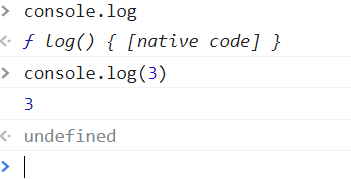

Js基本语法
今天简单学习了一些js的基本语法
1，什么是表达式和语句
表达式一般都有值，语句可能有，也可能没有。比如
1+2 值为3
add(1,2) 值为函数的返回值
console.log 值为函数本身
console.log(3) 值为函数的返回值--->undefined
上述都是表达式。
var a = 1
var b
这是一个语句，他可以有自己的值，也可以没有。 需要注意的是，值和返回值不同，只有函数有返回值。在js中大部分空格都没有实际意义，回车也是一样，在return后面不能加回车，如果加回车，他将返回undefined。
如果函数没有被调用，他的值就是他本身，如果函数被调用，他的值就是他的返回值。 如图所示

2，标识符的规则
第一个字符，可以是Unicode字母或￥或_或中文。 后面的字符，除了上述几种，还可以有数字。 变量名都是标识符
var _ = 1
var $ = 2
var ____ = 3
var 你好 = 'hi'
3，if else语句
if（表达式）{语句1}else{语句2}，用来做简单判断，如果表达式内容为true，执行语句1，否则执行语句2。if else 语句是可以嵌套使用的，可以添加多个if条件。if语句如果只有一句，{}可以省略，不推荐这样做。
if(表达式) {
语句
} else if(表达式) {
语句
} else {
语句
}
一般这样使用就可以。
- 问号冒号表达式 if else语句的一种缩写形式，比如
if(a>b){
console.log(a)
} else {
console.log(b)
}
上述代码可以这样简写
a>b ? console.log(a) : console.log(b)
和if else实现的效果相同，如果a>b成立就console.log(a),否则console.log(b)，问号冒号表达式通常用来简写括号中语句只有一行代码的情况。
- &&短路逻辑 &&的话也是一种简化if else的一种写法，直接上代码实例。
var a = b && c && d
上述代码的意义是取a的值为b,c,d中第一个假值或者d。就是说如果b，c的值全是true，取值为d，如果b，c中有false，就取b，c中为false的那个值，即取得第一个假值或者d。（取的值为b，c，d中的一个，并不是true/false）
- ||短路逻辑 ||和&&同理，只是简单逻辑不同。
var a = b||c||d
取值为第一个真值或者d。（不会取true或false）
- switch语句 可以理解为if else的升级版。
switch(fruit) {
case 'banana':语句
break
case 'apple':语句
break
default '‘:语句
break
}
一般不太常用，这里做简单了解。
4，while for语句
while语句的语法：
1，while(表达式){语句}
2，判断表达式的真假。
3，如果为真，执行语句，执行完再次判断真假。
4，如果为假，执行后面的语句。
for循环 可以理解为while语句的语法糖，就是while的方便写法。
语法：
1，for（语句1;表达式2;语句3;) { 循环体 }
2,先执行语句1
3，然后判断表达式2，
4，如果为真，执行循环体，然后执行语句3
5，如果为假，跳出循环，执行后面的语句。
for(var i = 0; i<5;i++) {
console.log(i)
}
上述就是一个简单的for循环语句
5，break continue
break的意思是退出所有循环。
continue的意思是跳出当前这一次循环。
6，label
label基本用不到，
语法：
foo: {
console.log(1)
break foo
console.log('本行不输出')
}
console.log(2)
可以理解为一个代码块，他的名字叫foo。